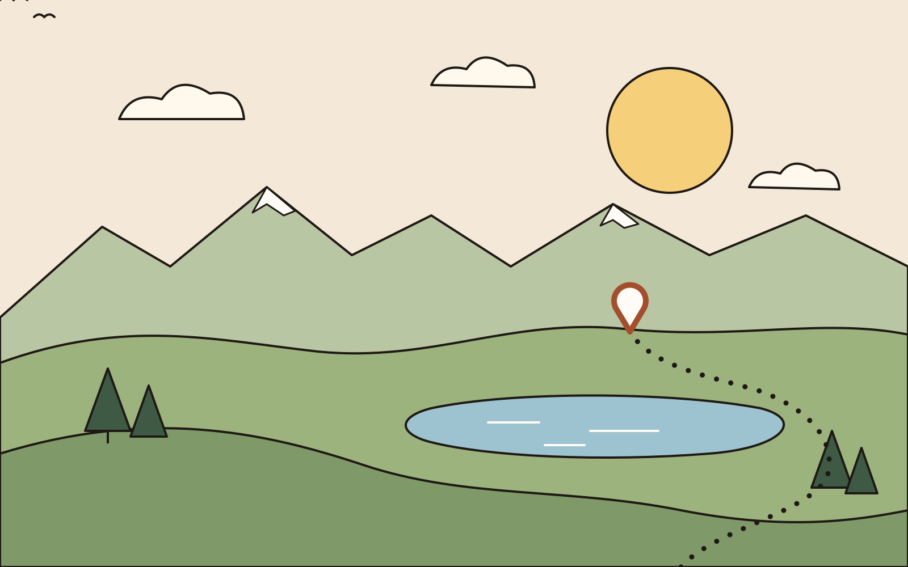
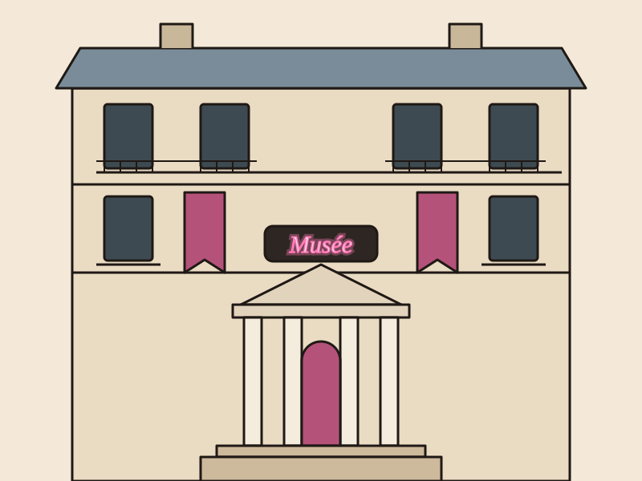
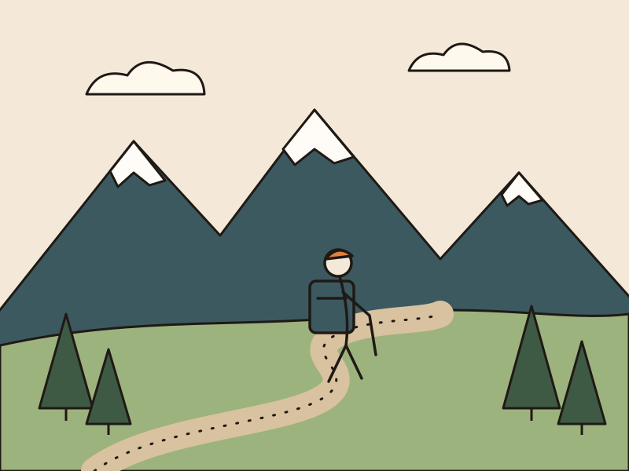
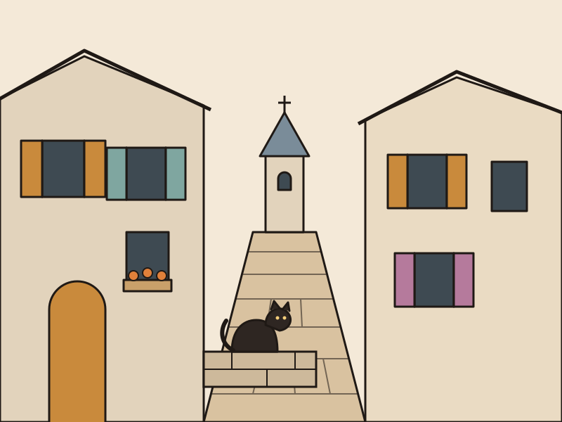
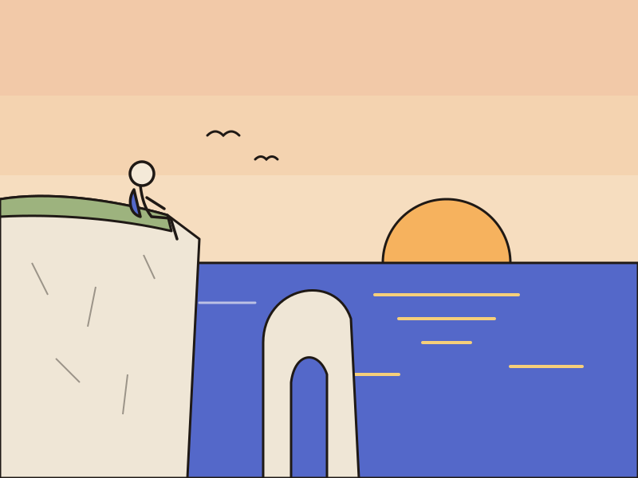
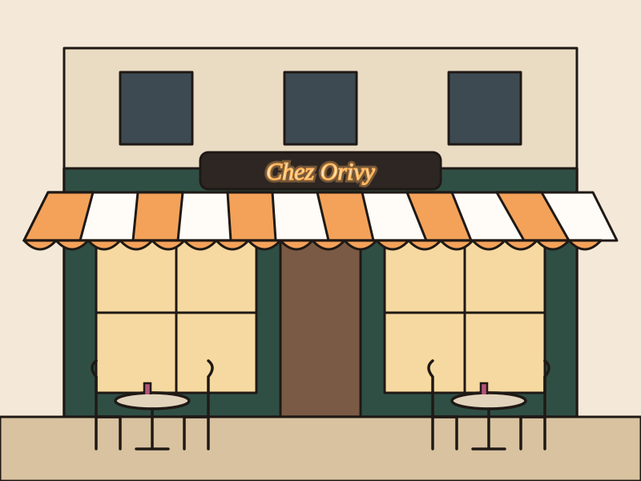
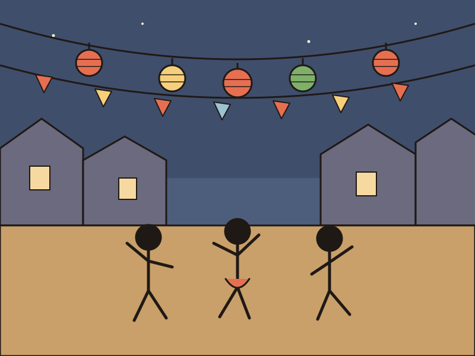
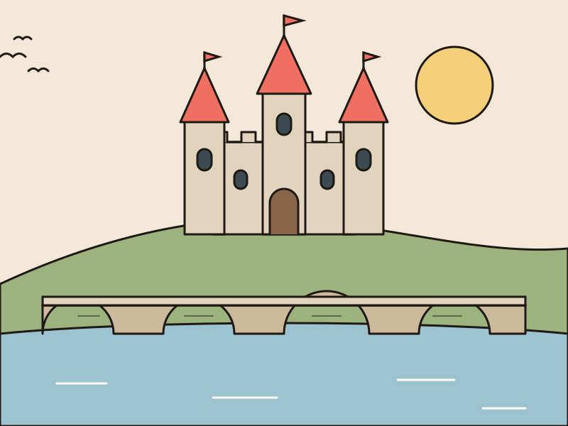

Randonnée

Découvre la France, vis l'instant, profite à plusieurs.
Des lieux à explorer et des sorties à partager, partout en France.

Musées & culture
Laisse-toi surprendre
Des grands musées parisiens aux petites collections de province, il y a toujours une salle qui t'attend.
Vois les musées sur la carte
Parcs & jardins
Respire au vert
Une pelouse, un grand arbre, un pique-nique entre amis : le bonheur tient parfois à peu de chose.
Vois les parcs sur la carte
Randonnées
Prends de la hauteur
Sentiers de crête, chemins côtiers, balades en forêt : enfile tes chaussures, la France est à toi.
Vois les randonnées sur la carte
Villages
Flâne dans les ruelles
Pierres dorées, volets colorés et marchés du dimanche : les plus beaux villages n'attendent que toi.
Vois les villages sur la carte
Points de vue
Admire le panorama
Falaises d'Étretat, dune du Pilat, belvédères du Verdon : vis les couchers de soleil en grand.
Vois les points de vue sur la carte
Restaurants
Mets les pieds sous la table
Bistrots de quartier, tables de chef et crêperies : partage un bon repas à plusieurs.
Vois les restaurants sur la carte
Cinémas
Fais-toi une toile
Salles Art déco, cinémas de quartier, séances en plein air : le grand écran, c'est mieux ensemble.
Vois les cinémas sur la carte
Événements
Vis l'instant
Fêtes de village, festivals, marchés de Noël : ne rate plus rien de ce qui se passe près de toi.
Vois les événements sur la carte
Monuments
Remonte le temps
Châteaux de la Loire, ponts romains, abbayes perchées : l'histoire de France se visite en vrai.
Vois les monuments sur la carteLes prochaines sorties
Rejoins une bande, ou lance ta propre sortie.